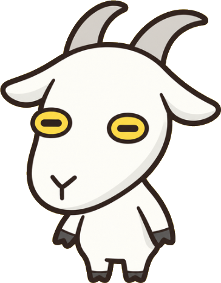

アイテムを選ぶとすぐに着せ替えられます
まだアイテムを持っていません。ショップで買うと、ここで着せ替えられます。
カードで「覚えた」を押すと1ポイント。同じフレーズは1日1回までです。
問題に正解すると1ポイント（カードの「覚えた」も正解に数えます）。同じフレーズでもらえるのは1日1回までです。
無料期間が終わると自動で続きます。App Storeの設定からいつでも解約できます。
単語帳やプリントを撮ると、AIが英語と日本語を読み取ります。
テーマを選ぶ何回でも使えます
自由に頼む
約30語を作ります。できたら選んで追加できます。
1行に1枚。英語と日本語のあいだは = , ： タブ のどれかで。Quizletやメモ帳からそのまま貼れます。
アカウントと、クラウドに保存した学習の記録・自分で作った単語帳・カードの画像がすべて消えます。この端末の記録も消えて、最初の状態に戻ります。元には戻せません。
準備中…
ホーム画面ウィジェットの設置方法 →
以前の合言葉を貼り付けると、その記録をこの端末に読み込みます。今のこの端末の記録は上書きされます。
覚えたフレーズ、苦手、ポイント、バッジ、今日の進み具合を最初の状態に戻します。連続日数とカレンダーはそのまま残ります。